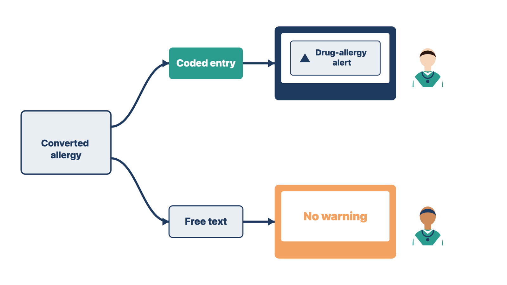
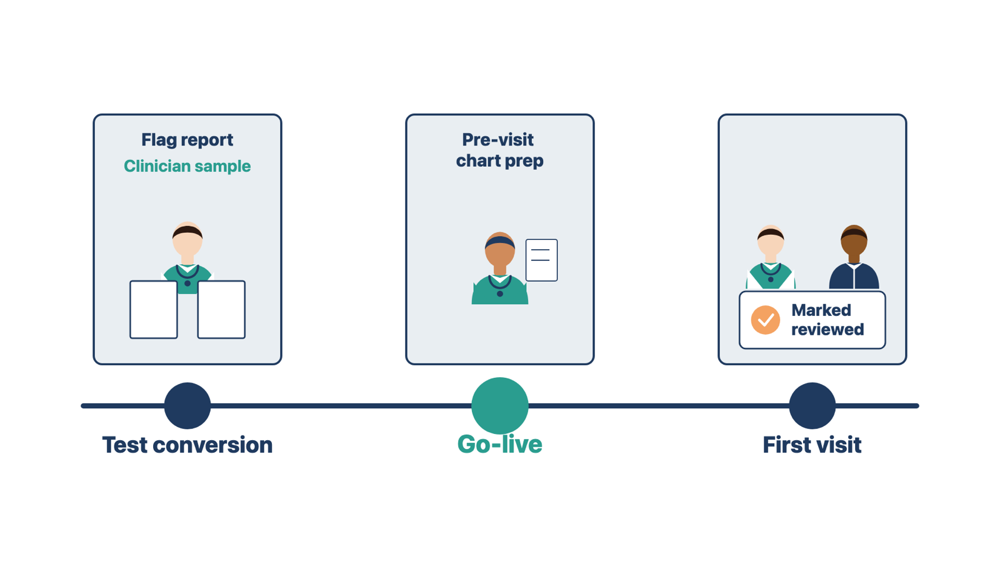
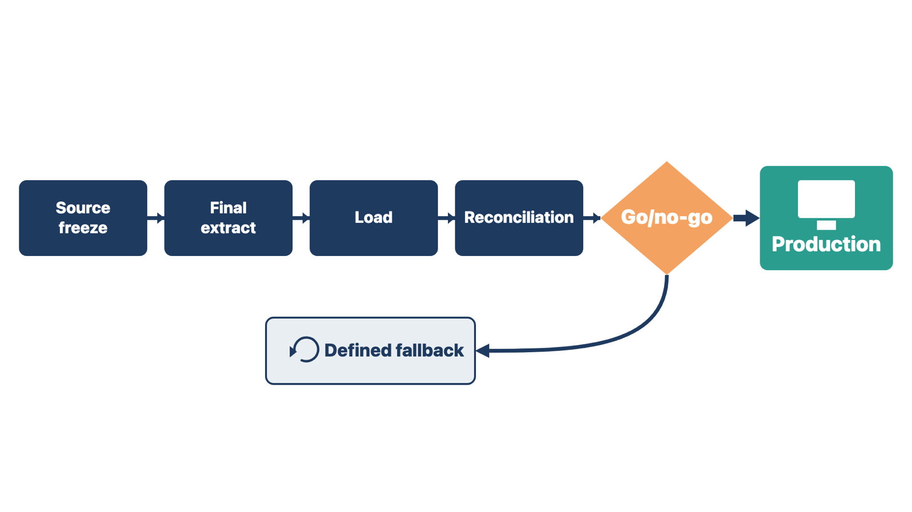

Clinicians prescribe, order, and screen from converted medication, allergy, problem, and immunization lists. An error there can reach a patient on the first day.
These lists are not ordinary fields. Drug-allergy and drug-drug checks read them. A list can match every count and still be unsafe. For example, an allergy may arrive as free text that the new system's alert logic cannot read. The prescriber then sees no warning at all.
Clinical validation means qualified clinicians confirm that converted clinical information is correct and safe to use for care. Technical reconciliation cannot do this. It shows that records moved, not that a clinician can rely on them.

Check each clinical list for these common problems:
These four lists are data classes in the United States Core Data for Interoperability (USCDI). USCDI is the national standard set of data that health IT systems exchange.
The Office of the National Coordinator for Health IT (ONC) publishes the SAFER Guides (Safety Assurance Factors for EHR Resilience). An EHR is an electronic health record. ONC's 2025 SAFER Guide on System Management calls for data-migration steps that protect data integrity. This matters most when data moves between EHRs, changes from free text to coded form, or gets new clinical codes.
Rule: A converted clinical list is not safe to use until qualified clinicians validate it.
In both cases the data moved correctly by count. Only a clinician could see that it was unsafe.
Check yourself
The safeguards below catch clinical errors before and at each patient's first visit. They only work if the right people own each decision.
1. Flag; do not drop or guess. Each test conversion produces a flag report. It lists uncoded or free-text items, unmapped codes, conflicting statuses, duplicates, and impossible dates. Flagged items arrive in the new system clearly marked as legacy or unverified. Do not quietly drop them. Do not let anyone assign a code by guessing.
2. Prepare charts before visits. For patients with visits in the first weeks after go-live, clinical staff review the converted lists before the visit. Build a worklist from the flag report. The clinical owner decides the order of review. High-risk patients often come first, such as those on blood thinners or insulin, or with severe allergies.
3. Reconcile at the first visit. At each patient's first visit in the new system, the clinician checks the converted lists with the patient and marks them reviewed. This matches normal medication reconciliation. For example, The Joint Commission's 2026 ambulatory National Patient Safety Goals ask clinics to find out what medicines a patient takes and compare them with new ones. Staff can also compare immunization history with the state's immunization information system (IIS), where one is available. An IIS is a confidential, population-wide database of vaccine doses.
During test conversions, clinicians also compare a sample of source charts with converted charts. Include high-risk patients and records with long lists.

The clinical authority is the person named in the project's governance to make clinical decisions, such as the medical director or clinical lead. The clinical authority approves the clinical validation rule. The rule covers:
The data owner accepts the converted data overall and relies on the clinical review for clinical lists. A pharmacist or nurse lead may advise.
You coordinate. You produce the flag reports, build the worklists, schedule reviews, track completion, and report exceptions to the clinical authority. You do not decide whether a converted allergy is clinically correct. You do not recode free-text items or mark lists reviewed. The vendor does not decide either, even when it runs the conversion.
Rule: You produce and track the clinical checks; the clinical authority decides what they mean.
Check yourself
Go-live weekend leaves little time to think. A written cutover plan decides in advance who does what, in what order, and what happens if the load fails.
Cutover is the planned switch from the old system to the new one. A freeze stops changes in the source so the final extract is complete. A delta is the set of changes made in the source after an extract. Fallback (or rollback) means returning to the old system if the new one cannot be used.
The cutover plan states:
Do not use "rollback" as a vague comfort. Define what can actually be reversed, how long it takes, what information would be lost or duplicated, who decides, and how users are told.

If users keep working in the source after an extract, decide how those changes reach the new system. Options include a final delta conversion, controlled manual entry, entry in both systems for a short approved period, or a cutover freeze. Each option has risk. Assign owners and a reconciliation step.
Rule: A fallback is real only when the plan says what can be reversed, how long it takes, and who decides.
Both plans seemed complete until someone asked, "What exactly happens?"
Check yourself
Once the old system is gone, missing history cannot be recovered. Retirement must wait until the clinic can still reach everything it must keep.
Before anyone retires the source, confirm:
Do not re-type years of history without a proven need and an approved plan. Do not destroy or abandon it just because re-entry takes too long.
Rule: No source is retired until required history is reachable and the retirement owner has approved.
Check yourself